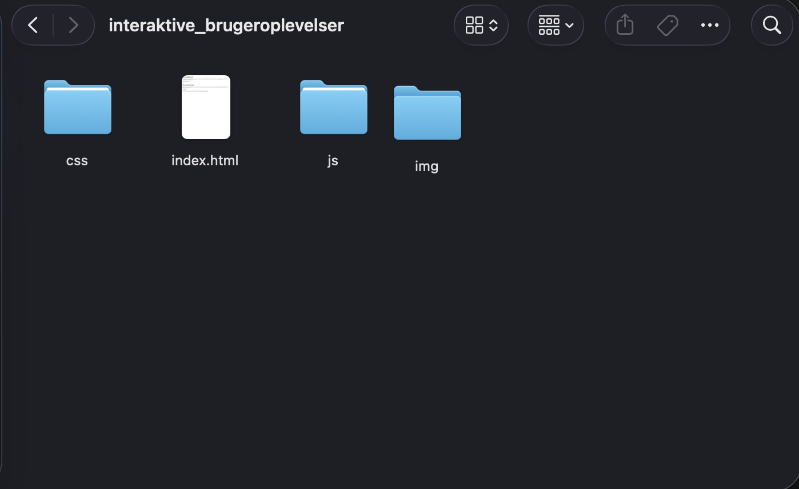

Hej og velkommen til!
Som studerende på multimediedesign må du allerede kende til en masse om datasikkerhed hos brugere, men har du mon egentlig styr på, hvordan du beskytter dine egne oplysninger?
Lad os finde ud af det!
Hov, du har fået en mail
Jeg kan se, at du har modtaget en mail fra SU-styrelsen d. 14. april. Mailen fortæller dig, at der er fejl i dine oplysninger, og hvis ikke du opdaterer vil du ikke modtage din SU.

Hvad gør du?
Du har åbnet mailen...
Der står her, at der er fejl i dine oplysninger, og hvis ikke du trykker på linket og opdaterer dine oplysninger, vil du ikke modtage din SU.
Hvordan reagerer du?
Åh nej, dine personoplysninger er i fare!
Linket har ført dig til en helt anden hjemmeside end SU-styrelsen. Mulige hackere har nu fået adgang til dine personoplysninger.
Det er vigtigt altid at være opmærksom på nettet og følge sin sunde fornuft.
Tip: Stil dig selv disse spørgsmål inden du bevæger dig ind på ukendte links: Kender du modtagerens mail? Hvor plejer du normalt at modtage dine beskeder fra offentlige instanser? Er der noget, der ser mistænkeligt ud?
Du må være mere forsigtig!
Dine personoplysninger er heldigvis ikke i fare, men du må være mere forsigtig, når du trykker modtager links eller pop-ups fra mistænkelige modtagere
Tillykke!
Du fandt det hurtigt mistænkeligt, at SU-styrelsen kommunikerede andre steder med dig end digital post. Her gjorde du det helt rigtige i at slette mailen og gå direkte til borger.dk i stedet for.
Fordi du var forsigtig og brugte din sunde fornuft er dine oplysninger altså stadig beskyttede og ikke i fare for at blive hacket!